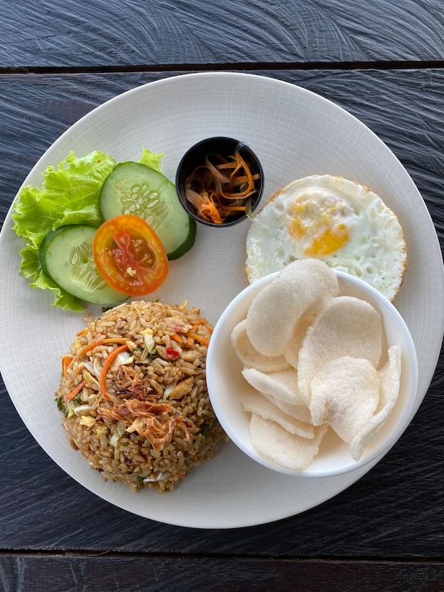

SECRET RECIPE OF NASI GORENG FROM INDONESIA

Description
Ini adalah makanan terenak nomor dua di dunia
Ingredients
- Nasi
- Bawang
- Cabai Merah
- Ketumbar
- Kecap
- Margarine
Steps
- Masukkan satu sendok margarin
- Masukkan Nasi ke Wajan
- Tambahkan kecap
- Berikan garam secukupnya
- Masukkan tumbukan ketumbar dan cabai merah
- Tambahkan bawang
- Goreng hingga matang
See other recipes